Basic Visualizations
UQ SLC Digital Team
2019-01-22

1 Introduction
This section discusses how data can be visualized and what needs to be kept in mind when visualizing data, e.g. axes labelling, and it exemplifies different types of graphs (scatter plot, line graphs, bar-charts, histograms, pie charts, box-plot). In addition, the pros and cons of different types of graphs are discussed and the steps and procedures to set up graphs are shown so that you can re-create the graphs at home. The practical part also focuses on potential problems you may encounter when setting up a graph. The graphs are plotted in R as it is a very flexible tool for visualization and offers more control over the distinct layers of plots.
As there exists a multitude of different ways to visualize data, this section can only highlight the most common types of visualization. Each type of visualization (or graph or plot) is briefly introduced followed by code which produces the type of visualization in R. This section focuses on using R when dealing with plots because R is extremely flexible when it comes to creating graphics. R is flexible in the sense that one can produce not only a huge variety of different types of visualization in R but also to modify these visualizations to match one’s individual needs. In addition, a major advantage of using R consists in the fact that the code can be store, distributed, and run very easily. This means that R represents a framework for creating graphs that enables sustainable, reproducible, and transparent procedures.
2 Basic Considerations about Visualizations
Before turning to the practical issues relating to creating graphs, a few words on what one has to keep in mind when visualizing data are in order. On a very general level, graphs should be used to inform the reader about properties and relationships between variables. This implies that graphs must be labelled properly to allow the reader to understand the visualization with ease.
3 Graphics with R
A few words on different frameworks for creating graphics in R are in order. There are three frameworks in which to create graphics in R. The basic framework, the lattice framework, and the ggplot or tidyverse framework.
The basic framework is the oldest of the three and is included in the base-package that is automatically activated when entering R. The idea behind the basic environment is that the creation of graphics is seen in analogy to a painter who paints on an empty canvass. Each line or element is added to the graph consecutively which oftentimes leads to code that is very comprehensible but also very long.
The lattice environment was a follow-up to the base-package and it complemented it insofar as it made it much easier to display various variables and variable levels simultaneously. The philosophy of the lattice-package is quite different from the philosophy in the base-package: Whereas everything had to be specified in base, the graphs created in the lattice environment require only very little code but are therefore very easily created when one is satisfied with the design but vey labour intensive when it comes to customizing graphs. However, the `lattice’ package is very handy when summarizing relationships between multiple variable and variable levels.
The ggplot environment was written by Hadley Wickham and it combines the positive aspects of both the base and the lattice package. It was first publicized in the gplot and ggplot1 packages but the latter was soon repackaged and improved in the now most widely used package for data visualization: the ggplot2package. Theggplot`-environment implements a philosophy of graphic design described in builds on The Grammar of Graphics by Leland Wilkinson ((Wilkinson 2006)).
The philosophy of ggplot2is to consider graphics as consisting out of basic elements (called aesthetics and they include, for instance, the data set to be plotted and the axes) and layers that overlayed onto the aesthetics. The idea of the ggplot2package can eb summarized as taking “care of many of the fiddly details that make plotting a hassle (like drawing legends) as well as providing a powerful model of graphics that makes it easy to produce complex multi-layered graphics.”
In the following, the graphs are initially created in the base environment while lattice and ggplot graphs, if appropriate, are shown after the basic display.
3.1 Data
Before turning to the graphs, we will briefly look at the structures of the data sets to what we are working with. In this chapter, we will not use language data but inbuild data sets that are provided by R and already loaded when entering R. The data sets are called iris and mtcars. The iris data set contains information about “measurements in centimetres of the variables sepal length and width and petal length and width, respectively, for 50 flowers from each of 3 species of iris. The species are Iris setosa, versicolor, and virginica” (cf. (Becker, Chambers, and Wilks 1988); (Anderson 1935); (Fisher 1936)). In a first step, we attach the iris data so that we only need to write the variable names without having to repeat the name of the data set. Then, we inspect the structure of the iris data using the str() command.
attach(iris) # attach iris
str(iris) # inspect iris data## 'data.frame': 150 obs. of 5 variables:
## $ Sepal.Length: num 5.1 4.9 4.7 4.6 5 5.4 4.6 5 4.4 4.9 ...
## $ Sepal.Width : num 3.5 3 3.2 3.1 3.6 3.9 3.4 3.4 2.9 3.1 ...
## $ Petal.Length: num 1.4 1.4 1.3 1.5 1.4 1.7 1.4 1.5 1.4 1.5 ...
## $ Petal.Width : num 0.2 0.2 0.2 0.2 0.2 0.4 0.3 0.2 0.2 0.1 ...
## $ Species : Factor w/ 3 levels "setosa","versicolor",..: 1 1 1 1 1 1 1 1 1 1 ...The iris data contains four numeric variables (Sepal.Length, Sepal.Width, Petal.Length, Petal.Width) which contain the values for sepal length and width as well as petal length and width. In addition, the data contains a factor or categorical variable (Species) which denotes the flower species. We will now turn to creating the graphs.
4 Scatter Plots
The first, and simplest graph, is a so-called “scatterplot”. Scatterplots are used when the graph is set up to display the relationship between two numeric variables. We will start off with creating a scatter plot in the base environment, then in the lattice package and finally in the ggplot environment.
4.1 Scatter Plots in base
The most fundamental function to create plots in the base environment is to use the general plot function. Here, we use that function to create a simple scatter plot.
plot(Sepal.Length ~ Sepal.Width, # plot Sepal.Length by Sepal.Width
type = "p", # plot type p (points)
data = iris, # data from data set iris
ylab = "Sepal Length", # add y-axis label
xlab = "Sepal Width", # add x-axis label
main = "plot type 'p' (points)" # add title
) # end drawing plot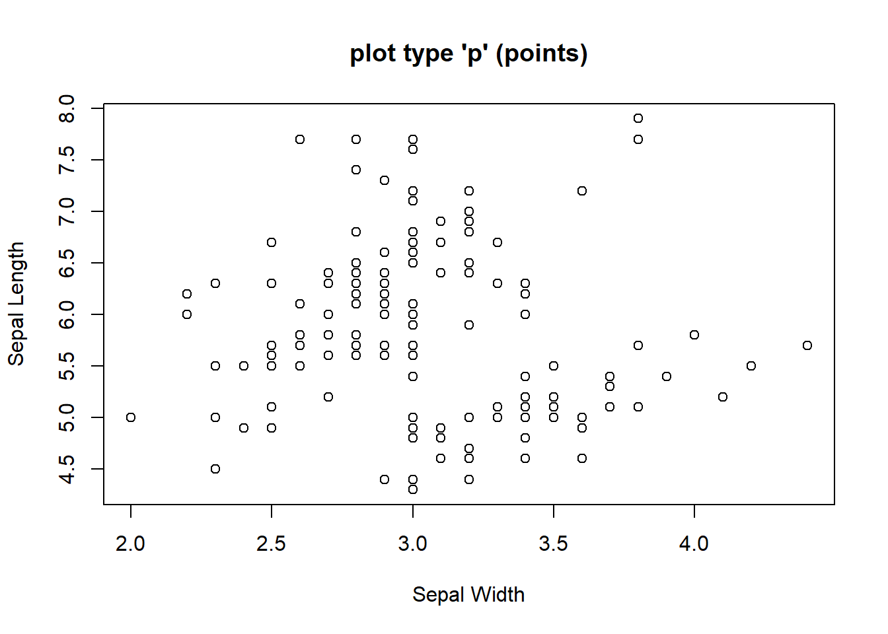
Let us go over the command. The first part of the call is plot which is the function for plotting data in the base package. In the round brackets are the arguments in which we specify what the plot should look like. The “Sepal.Length ~ Sepal.Width” part tells R which variables should be displayed and the “type =”p“” part tells R which type of plot we want (“p” stands for points, “l”, for lines, “b” for both lines and points). The part “data = iris” tells R which data set to take the data from, and “ylab =”Sepal Length“” and “xlab =”Sepal Width“” informs R about the axes’ labels. The part “main =”plot type ‘p’ (points)" informs R about what we want as the main title of the plot.
In a next step, we will change the title, add two regression lines to the scatterplot (in the first case a linear and in the second case a smoothed regression line) and we will change the points as well as the colour of the points.
plot(Sepal.Length ~ Sepal.Width, # plot Sepal.Length by Sepal.Width
type = "p", # plot type p (points)
data = iris, # data from data set iris
ylab = "Sepal Length", # add y-axis label
xlab = "Sepal Width", # add x-axis label
main = "Scatterplot", # add title
pch = 20, # use point symbol 20 (filled circles)
col = "lightgrey" # define symbol color as lightgrey
) # end drawing plot
abline( # add regression line (y~x)
lm(Sepal.Length ~ Sepal.Width), # draw rgeression line of linear model (lm)
col="red" # define line colour as red
) # end drawing line
lines( # add line (x,y)
lowess(Sepal.Width, Sepal.Length), # draw smoothed lowess line (x,y)
col="blue" # define line colour as blue
) # end drawing line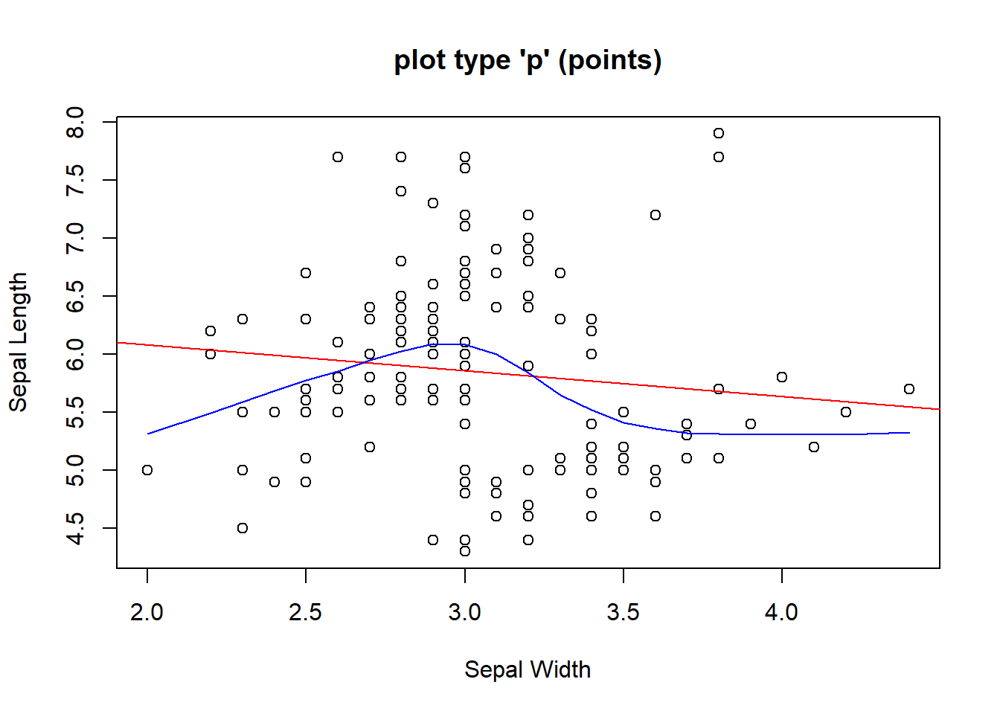
The only things that are different in the main call are the pch argument with has changed the points into filled dots (this is what the 20 stands for) and the col argument which we have specified as “lightgrey”. The regression lines are added using the abline and the lines argument.
4.2 Scatter Plots in lattice
In order to be able to plot data using the lattice package, we need to install and activate it first.
#install.packages("lattice") # install lattice package (remove # to activate code)
library(lattice) # activate lattice packageAfter the lattice package is loaded, we can create a first simple scatter plot using the xyplot function form the lattice package.
xyplot(Sepal.Length ~ Sepal.Width, # plot Sepal.Length by Sepal.Width
ylab = "Sepal Length", # add y-axis label
xlab = "Sepal Width" # add x-axis label
) # end drawing plot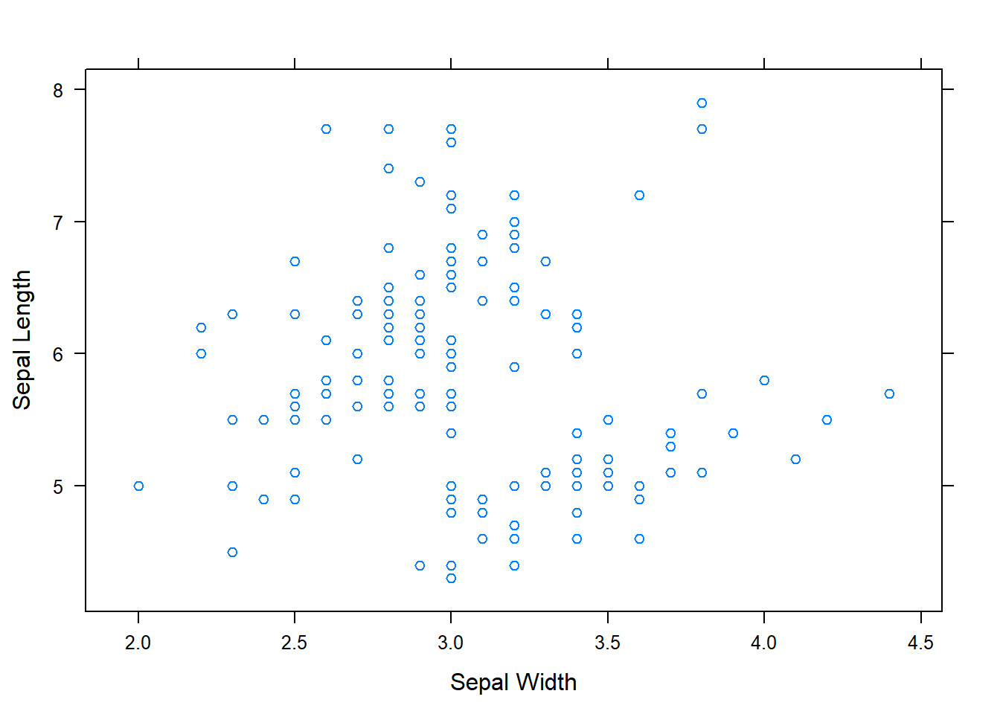
Since the lattice package was created to plot multiple relationships with a single call, we will now make use of that feature and plot multiple relationships at once. In addition, we will add a grid to the plot to improve comparability of data points within the graph.
xyplot(Sepal.Length ~ Sepal.Width | Species, # plot Sepal.Length by Sepal.Width by Species
ylab = "Sepal Length", # add y-axis label
xlab = "Sepal Width", # add y-axis label
grid = TRUE # add grids to panels
) # end drawing plot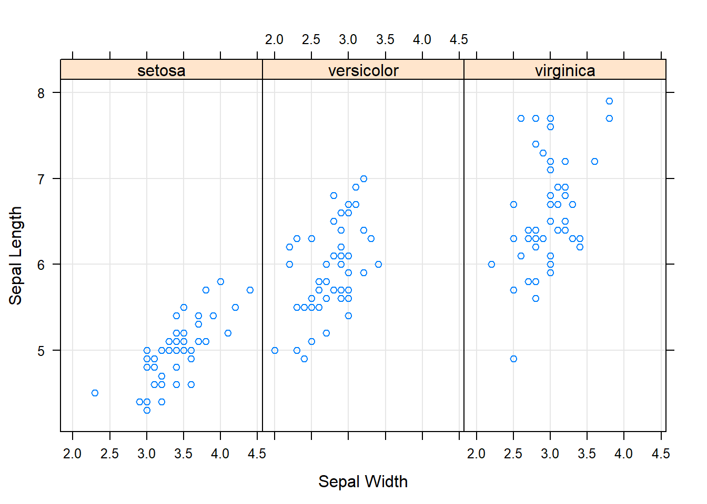
The only new code in the chunk above is the “| Species” part. This part means that the relationship between Sepal.Length and Sepal.Width should be displayed by Species. So, the |-symbol can be translated into “by”. The splitting of the plot into different panels for Species is then done automatically. Next, we will use the ggplot2-package to create a scatter plot
4.3 Scatter Plots in ggplot2
As with the lattice-package, we need to install and activate the ggplot2 before we are able to plot data using the ggplot2 package.
#install.packages("ggplot2") # install ggplot2 package (remove # to activate code)
library(ggplot2) # activate ggplot2 packageNext, we create a very basic scatterplot in ggplot2. The advantages of using ggplot2 will be shown below.
ggplot(iris, # plot data from data set iris
aes(x=Sepal.Length, y= Sepal.Width)) + # define x- and y-axis
geom_point() # define plot type (what should be drawn)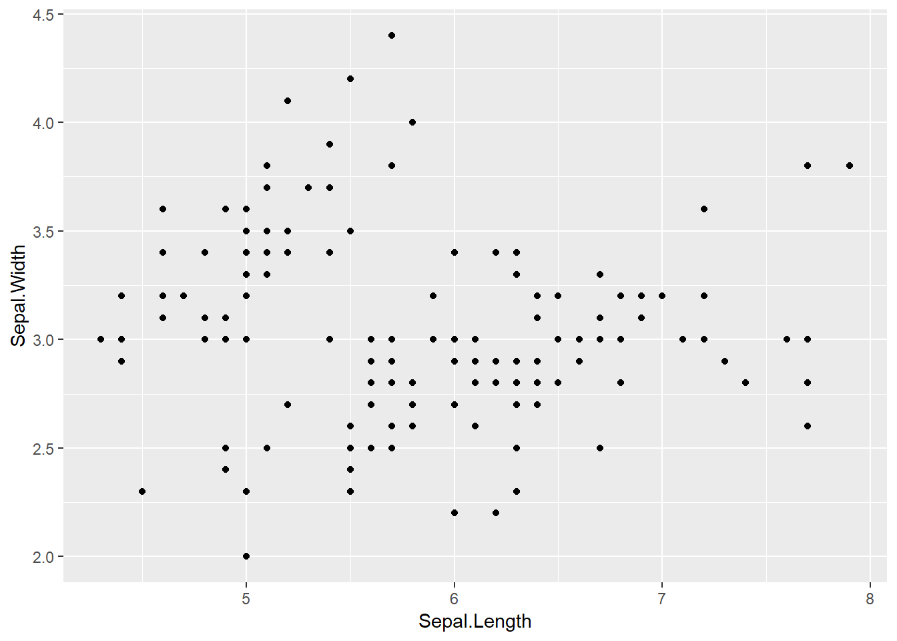
Let’s go over the code above. The function call for plotting in ggplot2 is simply ggplot. This function takes the data set as its first argument and then requires aesthetics. The aesthetics are defined within the ggplot function as the arguments of aes. The aes function takes the axes as the arguments (in the current case). Then, we need to define the type of plot that we want. As we want a scatter plot with points, we add the geom_point() function without any arguments (as we do not want to specify the size, colour, and shape of the points just yet).
The advantage of ggplot2 is that is really easy to modify the plot by adding new layers and to change the basic outlook by modifying the theme which is what we will do in the code below.
ggplot(iris, # plot data from data set iris
aes(x=Sepal.Length, y= Sepal.Width, # define x- and y-axis
color = Species)) + # define to color by Species
geom_point() + # define plot type (what should be drawn)
theme_bw() # define theme (black and white theme)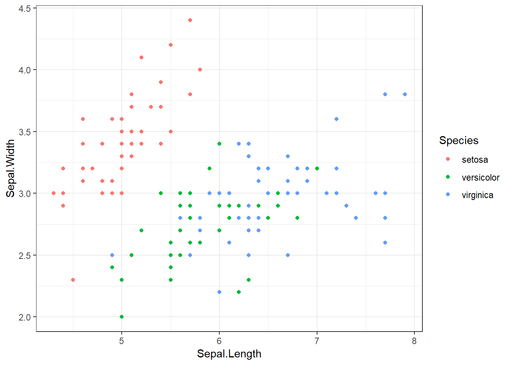
The example above is intended to show that creating ggplots is can be very simple but ggplot2 is extremely flexible and thus allows us to modify the plot in various ways. To exemplify how a ggplot may be modified, we will change the colour of the dots, add a white rather than a grey background.
scatterplot <- ggplot( # create plot object called scatterplot
iris, # plot data from data set iris
aes(x=Sepal.Length, # define x--axis
y= Sepal.Width, # define y-axis and color by Species
color = Species)) + # color by Species
geom_point() + # define plot type (what should be drawn)
scale_color_manual( # color manually
values = c('indianred4', 'darkgrey', 'gold')) + # define colours to be used
theme_bw() # define theme (black and white theme)The white background is created by specifying the theme as a black and white theme (theme_bw()) while the colour of the dots is changed by specifying that the colour should be applied by Species (color = Species). Then, the colours to be used are defined in the function scale_color_manual.
In addition, we can add regression lines with error bars by Species.
scatterplot + geom_smooth(method = "lm") # add regression line to object scatterplot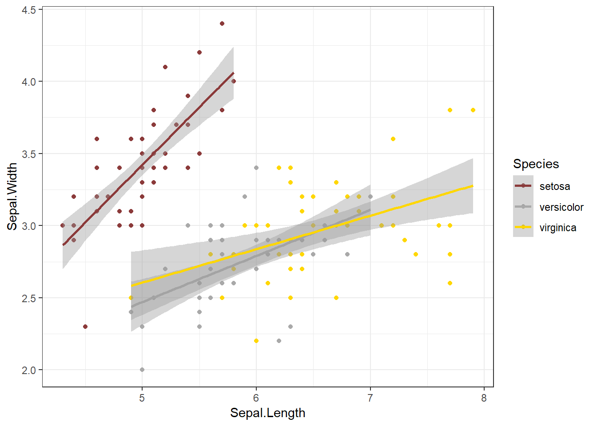
Another option is to plot density layers instead of plotting the data points.
ggplot( # create plot object called scatterplot
iris, # plot data from data set iris
aes(x=Sepal.Length, # define x--axis
y= Sepal.Width, # define y-axis and color by Species
color = Species)) + # color by Species
scale_color_manual( # color manually
values = c('indianred4', 'darkgrey', 'gold')) + # define colors to be used
theme_bw() + # define theme (black and white theme)
geom_density_2d() # add 2-dimensional density to object scatterplot4.3.1 Extensions of Scatter and Dot Plots
Although these are not scatterplots, plots with dot-symbols are very flexible and can be extended to show properties of the distribution of values. One way to create such a plot is to plot means as dot-symbols and add error bars to provide information about the underlying distribution. The plot below illustrates such a plot and additionally shows how plots can be further customized.
ggplot(iris, # create plot based on iris data
aes(Species, Sepal.Length, # define x- and y-axes
colour = Species)) + # color by Species
ggtitle("Sepal Length by Species") + # add title
stat_summary(fun.y = mean, geom = "point", # create a dot at means
aes(group= Species)) + # means by Species
stat_summary(fun.data = mean_cl_boot, # bootstrap data
geom = "errorbar", width = 0.2) + # add error bars
coord_cartesian(ylim = c(0, 8)) + # define y-axis range
theme_set(theme_bw(base_size = 20)) + # define font size
theme(axis.text.x = element_text(size=24, # define font size of x-axis text
face="plain"), # define style
axis.text.y = element_text(size=24, # define font size of y-axis text
face="plain"), # define style
axis.title.x = element_text(colour="grey20", # define color of x-axis title
size=24, # define font size of x-axis title
face="plain"), # define style
axis.title.y = element_text(colour="grey20", # define color of y-axis title
size=24, # define font size of x-axis title
angle=90, # define angle of x-axis title
face="plain")) + # define style
labs(x = "Species", y = "Sepal Length (cm)") + # define axes labels
scale_color_manual(values = c("grey20", "grey20", "grey20"), # define to color manually
guide = FALSE) # suppress legend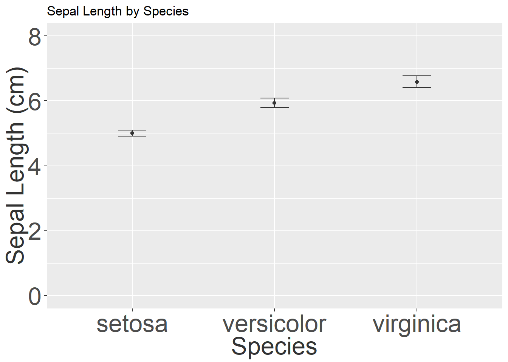
5 Line Graphs
Next, we will create a line chart. Line charts are used when we have numeric values that belong together in one way or another. A typical and common example is a series of points (e.g. mean values) for categorical variables. The following will focus on the creation of line graphs first in the base-package and in the ggplot-environment without detailing line graphs in the lattice environments as lattice does not have a ready-made function for creating line graphs.
5.1 Line Graphs in base
The implementation of line graphs in the base package is very simple and there are two ways to create such graphs. In contrast to the first example, we will use the mtcars data set and transform it into a format that allows us to create line graphs.
#install.packages("dplyr") # install dplyr package (remove # to activate code)
library(dplyr) # activate dplyr package
linedata <- mtcars %>% # create object linedata with mtcars data
group_by(cyl) %>% # group mtcars data by cyl
summarize( # summarize grouped data
MilesPerGallon_mean = mean(mpg), # create variable MilesPerGallon_mean (means of mpg)
Weigth_mean = mean(wt), # create variable Weigth_mean (means of wt)
HorsePower_mean = mean(hp), # create variable HorsePower_mean (means of hp)
Speed_mean = mean(qsec) # create variable Speed_mean (means of qsec)
) # end summary
attach(linedata) # attach data
linedata # inspect dataAfter formatting the data, we will now create the line graph with the plot function from the base package.
plot(MilesPerGallon_mean, # plot MilesPerGallon_mean
type = "b") # type of graph (both symbols and lines)
lines(Speed_mean, # draw line for Speed_mean
type = "b") # type of graph (both symbols and lines)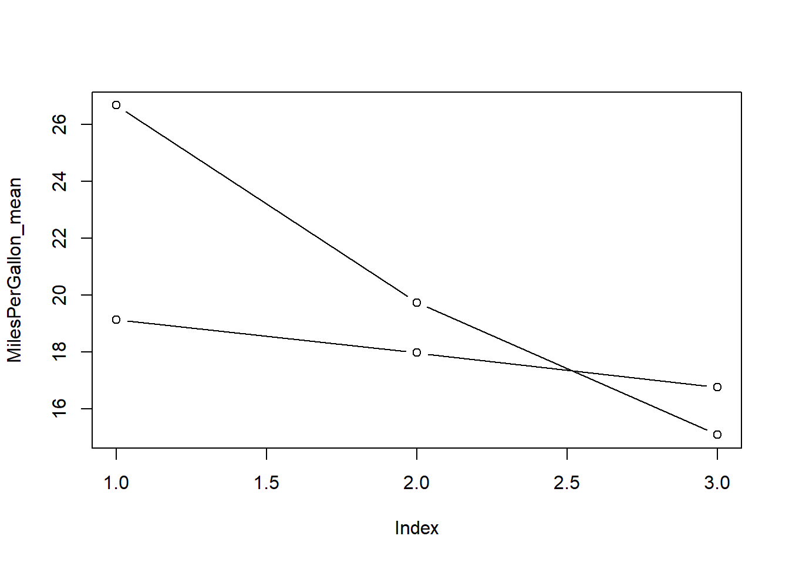
The first thing to note is that by default, the plot function will only draw a single line and all other lines have to be added using the lines function. The type = “b” part means that we want both points and a line. Also, although the code is very transparent, the line graph is not (yet) very appealing and the labels on the x-axis are, in fact, wrong. To improve the design and make the graph more appealing but also to correct the erroneous axis labelling, we will recreate the graph and customize it to match our needs.
plot(MilesPerGallon_mean, # plot MilesPerGallon_mean
type = "b", # type of graph (both symbols and lines)
ylim = c(10, 30), # y-axis range
ylab = "Value", # y-axis title
xlab = "Number of Cylinders", # x-axis title
axes = F) # suppress drawing of axes
lines(Speed_mean, # draw line for Speed_mean
type = "b", # draw both symbols and lines
lty = 2, # draw line type 2 (dashed)
pch = 2) # draw symbols type 2 (empty triangles)
axis(1, # x-axis
at = 1:3, # tick marks at positions 1 to 3
lab = c("4","6","8") # define tick marks
) # end x-axis definition
axis(2, # y-axis
at = seq(10, 30, 5), # tick marks at positions 10 to 30 with interval 5
las = 1, # draw tick marks perpendicular to axis
lab = seq(10, 30, 5) # define tick marks labels
) # end y-axis definition
box() # draw box around plotting area
legend("topright", # add legend at position top right
c("Miles per Gallon","Speed (1/4 Mile in sec.)"), # add description of legend elements
lty = c(1, 2) # define line types to be associated with elements
) # end legend definitionIn the code above, we have explicitly defined the y-axis range by stating “ylim = c(10, 30)” which means that the y-axis stretches from values of 10 to 30. In a next step, we have provided axes labels (ylab = “Value” and xlab = “Number of Cylinders”). The part “axes = F” informs R that we do not want it to draw the default axes. In the lines function, we have defined the line type (lty = 2 means that we want a dashed line and pch = 2 means that we want empty triangles rather than empty circles as symbols). Then, we define our customized axes. The axis function takes the side of the graph (1 is the x-axis, 2 the y-axis, etc.), the position of the tick marks (at) and the label of the tick marks (lab = c(“4”,“6”,“8”)) as arguments. Next, we force R to draw a box around the plot and added a legend using the legend function.
5.2 Line Graphs in ggplot2
We now turn to creating line graphs with ggplot2. To show the usefulness of ggplot, we create a slightly different data set by factorizing cyl in the linedata.
ggplot(linedata, # plot data from data set linedata
aes(cyl, MilesPerGallon_mean)) + # define x- and y-axis and color by cyl
geom_line(color = 'lightgray') + # draw line and define colour of line
geom_line(y = Speed_mean, color = 'gold') + # draw line for Speed_mean
labs(x = "Number of Cylinders") + # add x-axis label
scale_y_continuous(name="Value", # customize y-axis label
limits=c(10, 30)) + # customize tick positions
scale_x_continuous(breaks=c(4, 6, 8), # customize x-axis tick positions
labels=c("4", "6", "8")) + # add labels to customized x-axis tick positions
theme_bw() # define theme (black and white theme)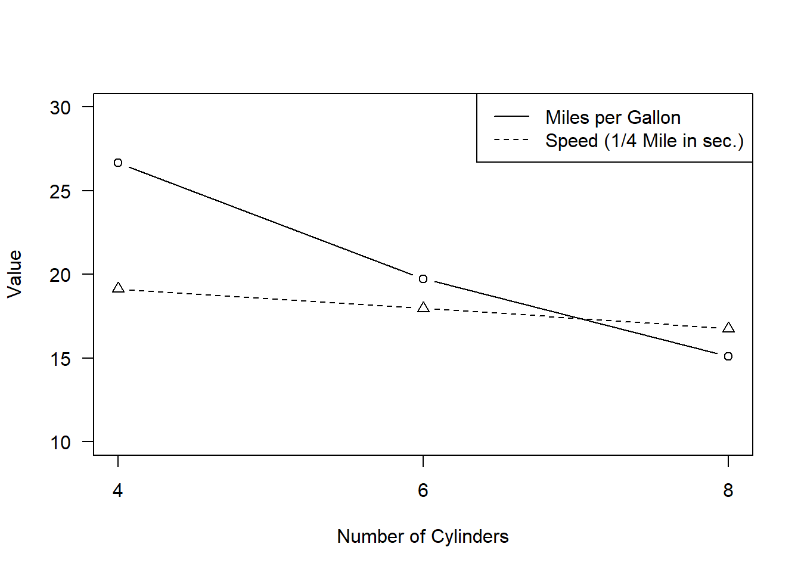
Another very useful function when creating line graphs with ggplot is geom_smooth which smoothes the lines to be drawn.
ggplot(linedata, # plot data from data set linedata
aes(cyl, MilesPerGallon_mean)) + # define x- and y-axis and color by cyl
geom_smooth(aes(y = MilesPerGallon_mean, # draw smoothed line for MilesPerGallon_mean
color = "MilesPerGallon_mean", # define color for line
linetype = "MilesPerGallon_mean")) + # define line type
geom_smooth(aes(y = Speed_mean, # draw smoothed line for Speed_mean
color = "Speed_mean", # define color for line
linetype = "Speed_mean")) + # define line type
guides(color=guide_legend(override.aes=list(fill=NA))) + # legend without background color
theme(legend.position="top") + # define legend position
scale_linetype_manual(values=c("longdash", "dotted"), # define linetype
name=c("Variables"), # define header for linetype guide
breaks = c("MilesPerGallon_mean", "Speed_mean"), # define linetypes
labels = c("MilesPerGallon_mean", "Speed_mean")) + # define labels
scale_colour_manual(values=c("goldenrod2", "indianred4"), # define colors
name=c("Variables"), # define legend header
breaks=c("MilesPerGallon_mean", "Speed_mean"), # define elements
labels = c("MilesPerGallon_mean", "Speed_mean")) + # define labels
labs(x = "Number of Cylinders") + # add x-axis label
scale_x_continuous(breaks=c(4, 6, 8), # customize x-axis tick positions
labels=c("4", "6", "8")) + # add labels to customized x-axis tick positions
scale_y_continuous(name="Value", # add y-axis label
limits=c(10, 30)) + # customize tick positions of y-axis
theme_set(theme_bw(base_size = 10)) # define theme (black and white theme)Although the code for the geom_smooth line graph is much longer and requires addition specifications, it is a very nice way to portrait the development of variables (here the miles per gallon and the quarter mile speed) across the range of another variable (here the number of cylinders).
6 Barplots
One very common data structure to visualize is tables containing absolute frequencies or counts. The default way to visualize such frequency tables are barplots. This section deals with such bar plots and offers practical tips on how to modify and customize such plots.
6.1 Barplots in base
This section deals with bar plots that are typically used to show counts of variable levels.
counts <- table(mtcars$gear) # create table of gears in mtcars
barplot(counts, # start barplot and use counts table
main="Frequency of cars by their number of gears", # title of bar plot
xlab="Number of Gears", # x-axis label
ylim = c(0,20) # y-axis range
) # end plot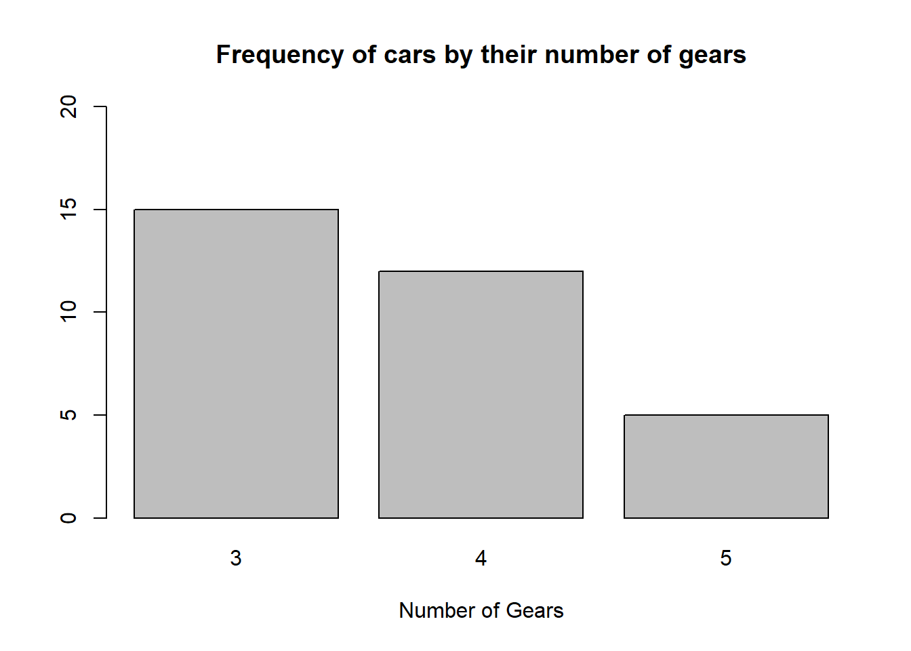
The bar plot above is not very nice, so we will modify it do create a nicer design with horizontal rather than vertical bars and adjusted colours.
barplot(counts, # create barplot of counts
main="Frequency of cars by their number of gears", # title of the bar plot
horiz = T, # bars horizontal rather than vertical
xlab="Number of Gears", # x-axis label
col = c("grey30", "grey50", "grey70"), # colour of bars
xlim = c(0,20), # y-axis range
las = 1 # define that labels should be perpendicular to the axis
) # end plot
box() # create box around panel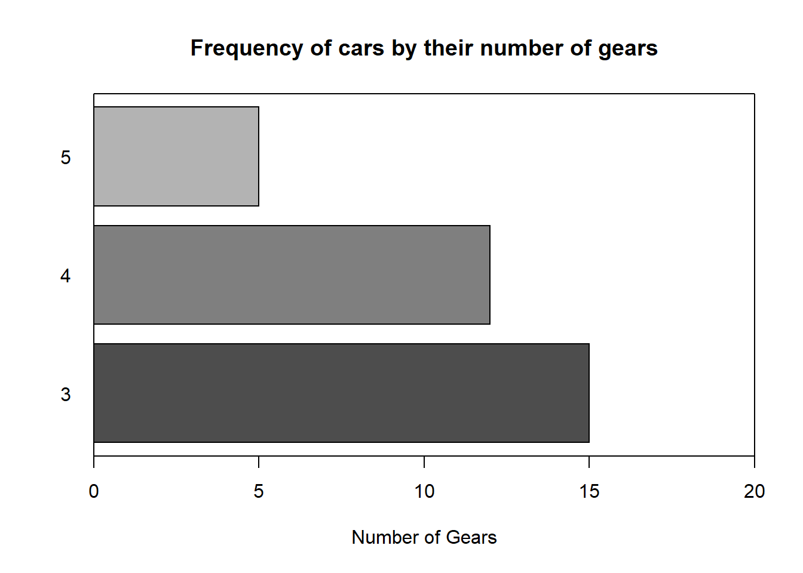
WE will briefly turn to pie charts because pie charts because they are frequently used although they have some severe shortcomings. Consider the following example for we will create another data set to highlight the issues that arise when using pie charts.
Values <- c(10, 12, 7, 14, 9) # create a vactor of values
Labels <- c("US", "UK", "Australia", "Germany", "France") # create a vector of labels
Percentages <- round(Values/sum(Values)*100) # calculate the percentages for each element in values
Labels <- paste(Labels, Percentages) # add percentage values to labels
Labels <- paste(Labels,"%",sep="") # add % symbol to labels
piedata <- data.frame(Values, Percentages, Labels) # combine in a data frame
attach(piedata) # attach piedata to avoid having to specify the data
piedata # inspect data framepie(Values,
labels = Labels,
col=rainbow(length(Values)),
main="Pie Chart of Countries")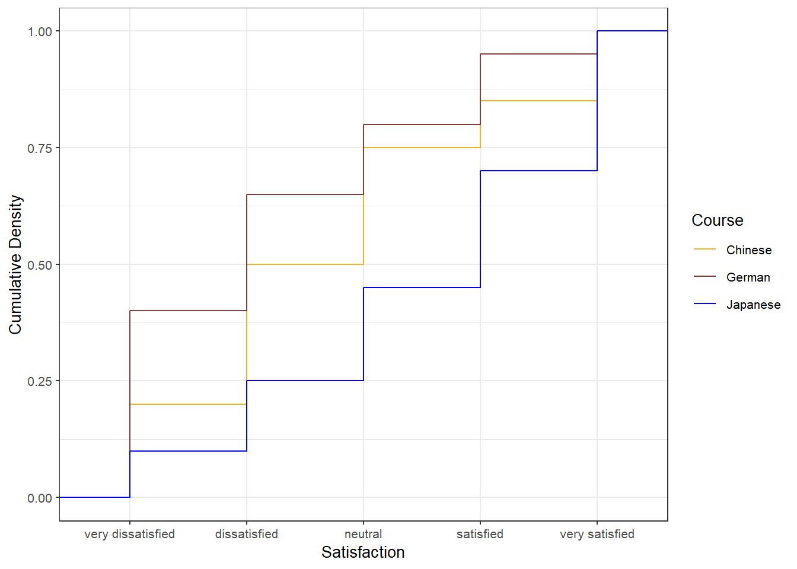
If the slices of the piechart were not labelled, it would be difficult to see which slices are smaller or bigger compared to other slices. This problem can easily be avoided when using bar charts.
barplot( # create bar plot
Values[order(Values, decreasing = T)], # plot Values in decreasing order data
ylim = c(0,20), # y-axis range
col=rainbow(length(Values)), # add colors
main="Pie Chart of Countries" # define plot title
) # end plot
text( # add text (labels)
seq(0.7, 5.5, 1.2), # define the x-axis positions of the labels
Values[order(Values, decreasing = T)] + 2, # define the y-axis positions of the labels (2 higher than bar)
Labels[order(Values, decreasing = T)] # define text to be plotted
) # end writing textCompared with the piechart, it is much easier to grasp the relative size and order of the percentage values of the countries. This goes to show that pie charts are unfit to show relationships between elements in a graph and, as a general rule of thumb, should be avoided.
Another feature of barplots is that the bars can be stacked and normalized so that changes in percentages become visible. One such example is shown below but before we can create such a graph, we need to create an appropriate data set.
barplotdata=matrix(sample(1:50,15) , nrow=3) # create a matrix called barplotdata
colnames(barplotdata)=c("1900","1920","1940","1960","1980") # add column names
rownames(barplotdata)=c("A","B","C") # add rownames
barplotdatapercent=apply(barplotdata, 2, function(x) { round(x*100/sum(x),1) }) # calculate percentages
barplotdatapercent # inspect dataNow we can create a stacked barplot.
barplot( # create a barplot
barplotdatapercent, # use barplotdatapercent
main="Stacked Barplot", # add title
xlab="Decade", # add x-axis label
ylab="Percent", # add y-axis label
col=c("darkblue","red", "gold"), # define colors
legend = rownames(barplotdatapercent), # add a legend
beside=F # do not place bars beside each other (stack the bars)
) # end barplot
box() # create a box around the plot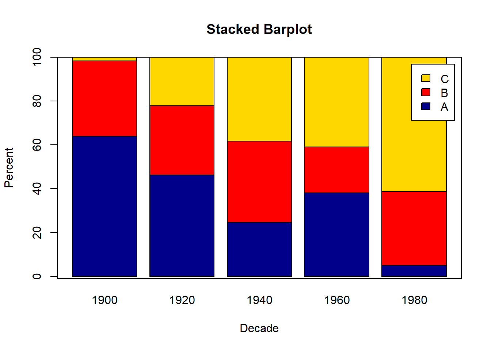
Stacked barplots should only be used when dealing with percentages because trends in the data will be more difficult to detect if the bars are of unequal height. Therefore, avoid stacking when dealing with uneven column sums. Another issue to consider is the number of variable levels: when dealing with many variable levels, stacked barplots tend to become rather confusing, so either collapse infrequent variable levels or choose another visualization type (in cases when dealing with few frequent and many infrequent variable levels, line graphs tend to work better).
6.2 Grouped Barplots
Another alternative to stacked barplots are grouped barplots. In addition to linegraphs, grouped barplots are particularly useful when dealing with frequency counts.
barplot( # create a barplot
barplotdata, # use barplotdata
main="Grouped Barplot", # add title
xlab="Decade", # add x-axis label
ylab="Percent", # add y-axis label
ylim=c(0,50), # define y-axis range
col=c("darkblue","red", "gold"), # define colours
beside=T, # place bars beside each other (group the bars)
legend = rownames(barplotdata), # add a legend
args.legend=list( # place legend beside plotting area
x=22, # define x-axis position
y=max(barplotdata), # define y-axis position
bty = "n" # separate legend elements with line break
) # end legend definition
) # end barplot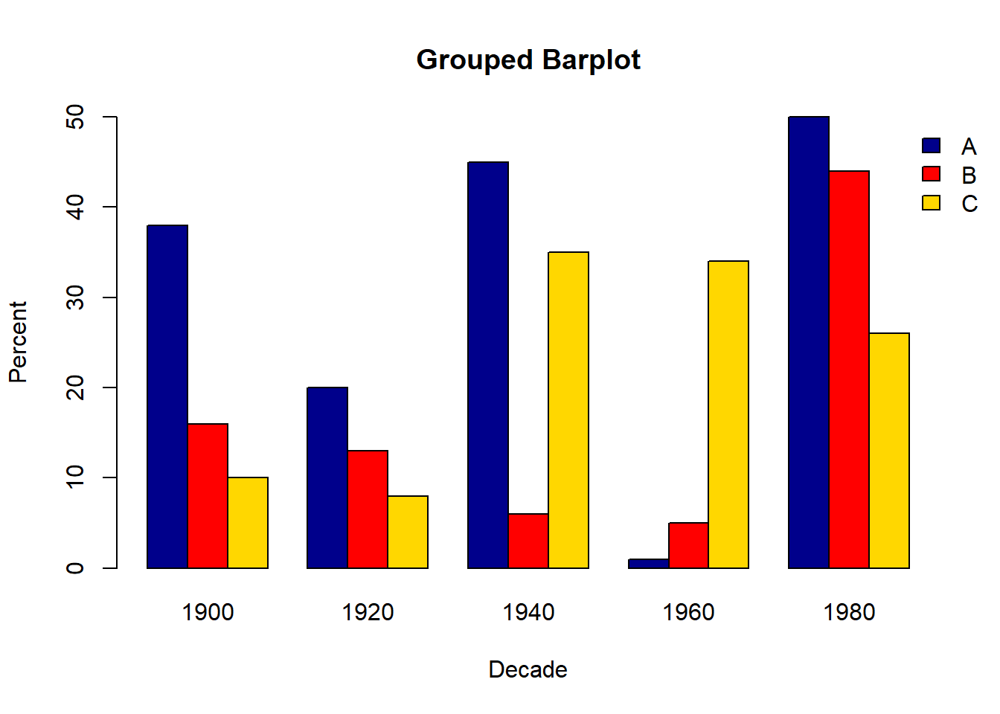
After having dealt with barplots in base, we will now turn to barplots in ggplot.
6.3 Barplots in ggplot
The logic of creating barplots in ggplot is again very similar to what we have encountered above. The code is also very similar as we only need to modify the data and change the specification of geom_line to geom_bar. Before we can start plotting, however, we will create two data sets that are set up in a way that it is easy to plot them.
barplotdatagg1 <- data.frame( # create a data set called barplotdatagg1
rep(rownames(barplotdata), ncol(barplotdata)), # create a vector with Variable values
rep(colnames(barplotdata), each = nrow(barplotdata)), # create a vector with Decade values
as.vector(barplotdata) # create a vector with Frequency values
) # end data set creation
colnames(barplotdatagg1) <- c("Variable", "Decade", "Frequency") # define column names
attach(barplotdatagg1) # attach barplotdatagg1 data set
head(barplotdatagg1) # inspect barplotdatagg1We now create a second data set that contains frequencies per decade (without regard for Species).
barplotdatagg2 <- barplotdatagg1 %>% # create a data set called barplotdatagg2
group_by(Decade) %>% # group by Decade
summarize( # start summary
CumFreq = sum(Frequency) # create variable of cululative frequencies
) # end data set creation
attach(barplotdatagg2) # attach barplotdatagg2 data set
head(barplotdatagg2) # inspect barplotdatagg2Now that the data is in the appropriate format, we can create a barplot of the data using the ggplot function.
ggplot(barplotdatagg2, # plot barplotdatagg
aes(Decade, CumFreq)) + # define x- and y-axis
geom_bar(stat="identity") + # determine type of plot
theme_bw() # define theme (black and white theme)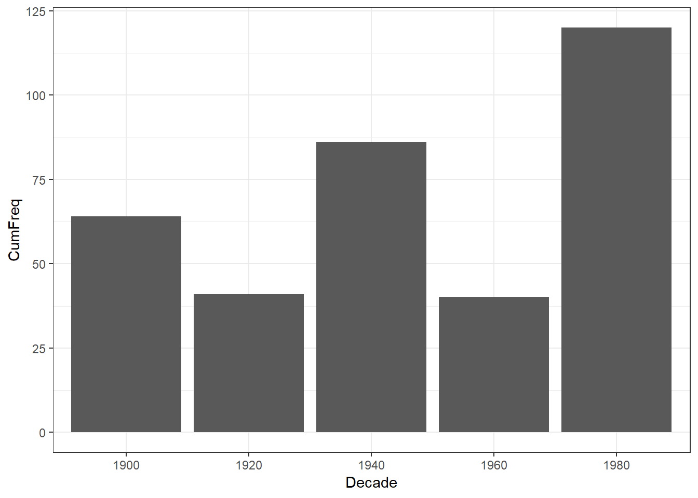
After having created a simple barplot, we will now turn to plotting grouped data using the data set we created first.
ggplot(barplotdatagg1, # plot barplotdatagg1
aes(Decade, Frequency, # define x- and y-axis
fill = Variable)) + # define grouping variable
geom_bar(stat="identity", # determine type of plot
position=position_dodge()) + # determine grouping
scale_fill_manual(values=c("goldenrod2", "gray70", "indianred4")) + # define colors
geom_text(aes(label=Frequency), vjust=1.6, color="white", # add text and define color
position = position_dodge(0.9), size=3.5) + # define text position and size
theme_bw() # define theme (black and white)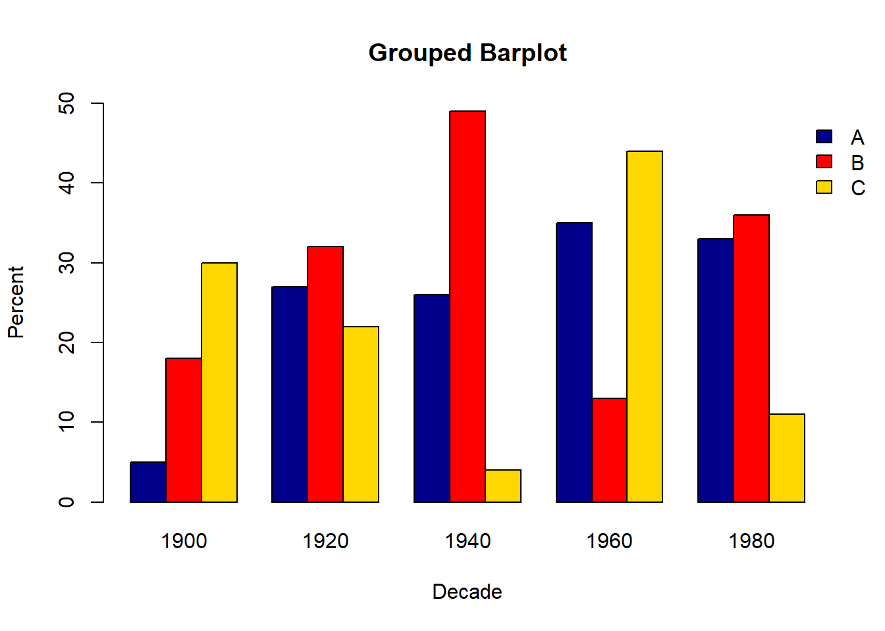
6.4 Barplots for Questionaires
Barplots are particularly useful when visualizing data obtained through Likert items. As this is a very common issue that empirical researchers face. Accordingly, the following section exemplifies how to display such data using the Likert package. In a first step, we need to install the package (if it is not already installed).
#install.packages("likert") # install likert for lickert visualizations (remove # to activate code)
library(likert) # activate packageIn a next step, we clean the data and a extract a subset for the data visualization example.
data(pisaitems) # use a provided dataset called pisaitems
items28 <- pisaitems[, substr(names(pisaitems), 1, 5) == "ST24Q"] # extract a subset of the data for visualization
questionl28 <- likert(items28) # plot the data
summary(questionl28) After extracting a sample of the data,w e plot it to show how the Likert data can be displayed.
plot(questionl28)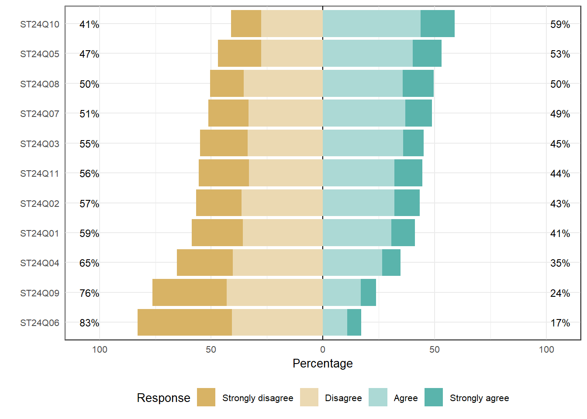
6.4.1 Barplots with Negative Values
Another frequent task is to evaluate the divergence of values from a reference, for instance when dealing with language learners where native speakers serve as a reference or target. To illustrate how such data can be visualized, we load the scales package as we want to create a barplot in which we show the divergence of learners from native speakers regarding certain features and how that divergence changes over time.
#install.packages("scales") # install scales library (remove # to activate code)
library(scales) # activate librariesIn a next step, we create an example data set which mirrors the format we expect for the actual data.
Test1 <- c(11.2, 13.5, 200, 185, 1.3, 3.5) # create a vector with values called Test1
Test2 <- c(12.2, 14.7, 210, 175, 1.9, 3.0) # create a vector with values called Test2
Test3 <- c(13.2, 15.1, 177, 173, 2.4, 2.9) # create a vector with values called Test3
testdata <- data.frame(Test1, Test2, Test3) # combine vectors in a data frame
rownames(testdata) <- c("Feature1_Student", # add rownames
"Feature1_Reference",
"Feature2_Student",
"Feature2_Reference",
"Feature3_Student",
"Feature3_Reference")
testdata # inspect dataWe can now determine how the learners deviate from the native speakers.
# determine divergence from reference
FeatureA <- t(testdata[1,] - testdata[2,]) # row 1 (student) minus row 2 (reference)
FeatureB <- t(testdata[3,] - testdata[4,]) # row 3 (student) minus row 4 (reference)
FeatureC <- t(testdata[5,] - testdata[6,]) # row 5 (student) minus row 6 (reference)
plottable <- data.frame(rep(rownames(FeatureA), 3),
c(FeatureA, FeatureB, FeatureC),
c(rep("FeatureA", 3), rep("FeatureB", 3), rep("FeatureC", 3)))
colnames(plottable) <- c("Test", "Value", "Feature")
plottable # inspect dataFinally, we graphically display the divergence using a barplot.
# create plot
ggplot(plottable, aes(Test, Value)) + # determine data and axes
facet_grid(vars(Feature), scales = "free_y") + # separate plots for each feature
geom_bar(stat = "identity", aes(fill = Test)) + # cerate bars
theme_bw() + # white background
guides(fill=FALSE) + # no legend
geom_bar(stat="identity", fill=rep(c("goldenrod2", "gray70", "indianred4"), 3)) + # add color
labs(x = "", y = "Score") # axes titles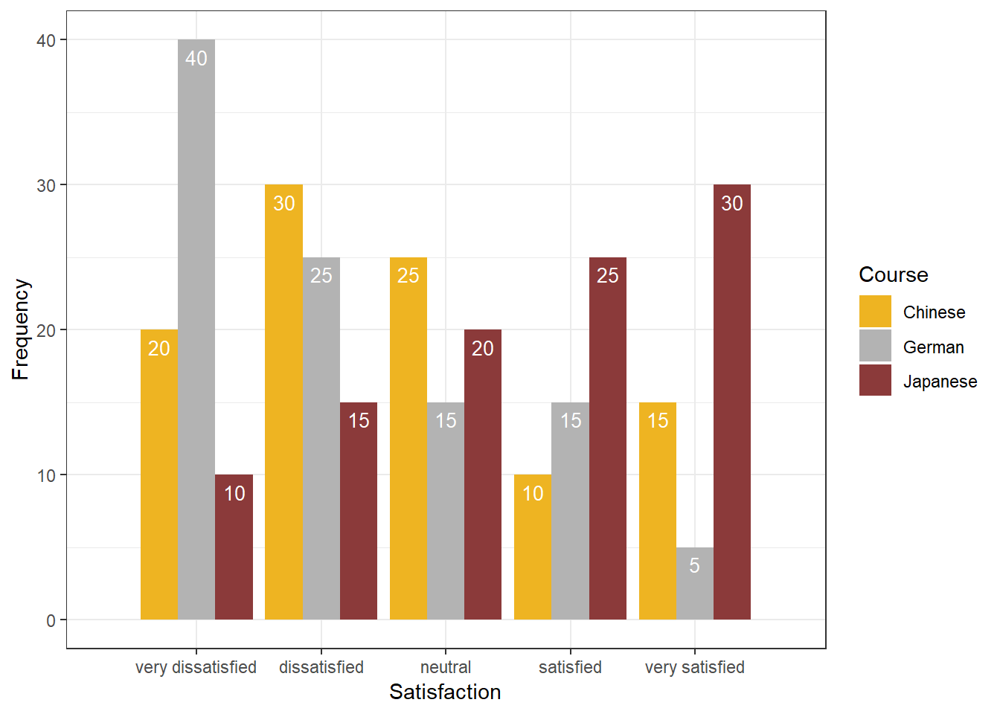
6.5 Extensions of Barplots: Associationplot
A plot type that is related to barplots is the association plot. Association plots are similar to the barplot which shows deviations from a reference as above but association plots show the difference between the observed and expected frequencies in bin. Therefore, they are often used when graphically representing tables with absolute frequencies. In order to plot an association plot, we need to load the vcd package. For the example here, we are also changing the labels in the table from “Male” and “Female” to “M” and “F” because otherwise, the labels would overlap.
#install.packages("vcd") # install vcd for mosaic plot (remove # to activate code)
library(vcd) # activate vcd package
attr(HairEyeColor, "dimnames")$Sex=c("M", "F") # recode the Sex variable to avoid overlay in the plotAssociation plots are created by using the assoc function which takes a table (or a similar format such as a matrix or a data frame) as their argument. In addition, we specify shade as T in order to colour code the bars in the association plot and to add a legend.
assoc(HairEyeColor,
shade=TRUE)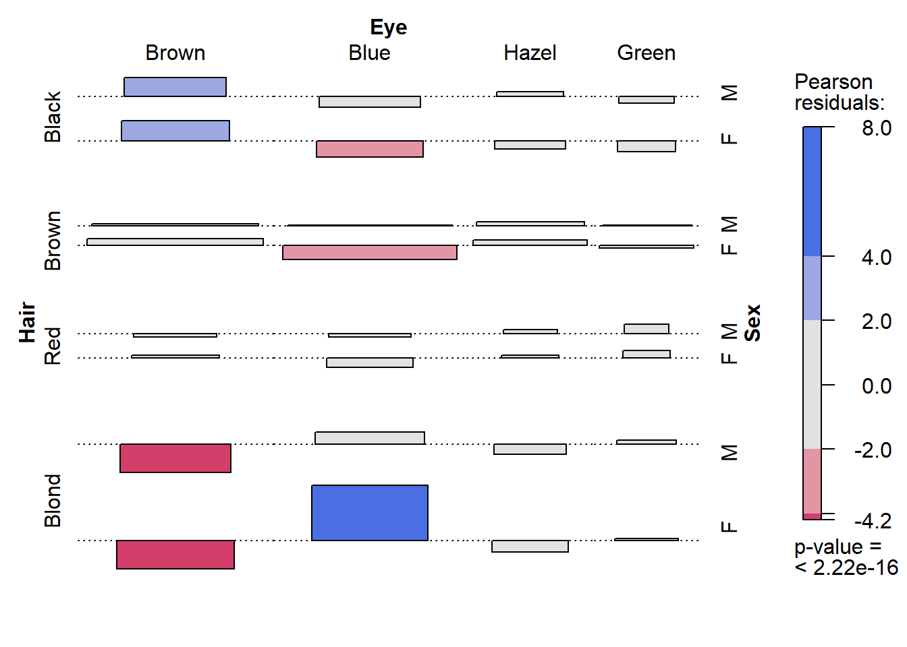
6.6 Extensions of Barplots: Mosaicplot
Another plot which is useful to graphically depict the relationship of categorical variables is the mosaic plot. The size of the boxes in a mosaic plot indicate how frequent that subcategory is and the colours show whether or not the category differs from the value that is expected if given the overall distribution in the table. In addition, the hue of the colour shows how great the difference between observed and expected is and thus indicates whether the respective subcategory deviates significantly from the expected frequency.
mosaic(HairEyeColor, # create a mosaic plot with the HairEyeColor data set
shade=T, # color code difference between observed and expected values
legend=TRUE) # add a legend to explain the color codingAccording to the mosaic plot above, people who have blond hair and brown eyes occur less frequently than expected if there were no correlation between eye and hair colour (as indicated by the red rectangles in the lower left corner). The combination of blond hair and blue eyes is, however, substantially more frequent than would be expected by chance.
7 Boxplots
So far, we have plotted values but we have not plotted the underlying distributions. For instance, we have plotted mean values but not the variance within the distribution. One handy way to combine plotting general trends and their underlying distributions including their range are boxplots.
7.1 Boxplots in base
Boxplots, or Box-and-Whisker Plots, are exploratory graphics first created by John W. Tukey and they show the relationships between categorical and numeric variables. They are very useful because they not only provide measures of central tendency (the median which is the line in the middle of the box) but they also offer information about the distribution of the data. To elaborate, fifty percent of data points fall within the box while seventy-five percent of data points fall within the whiskers (the lines which look like extended error bars): the box thus encompasses the interquartile range between the first and third quartile. The whiskers show the minimum and maximum values in the data and only outliers (data points that lie 1.5 times the interquartile range or more above the third quartile or 1.5 times the interquartile range or more below the first quartile. If the whiskers differ in length, then this means that the data is asymmetrically distributed.
boxplot(Sepal.Length~Species, # create a boxplot of Sepal.Length by Species
data=iris, # use data set iris
main="Boxplot", # add title
ylab="Sepal Length (cm)", # add y-axis label
xlab="Species", # add x-axis label
col = c("lightgrey", "lightblue", "lightgreen") # defibe color of boxes
) # end plot
Another interesting feature of boxplots is that they allow us to visually get an idea whether categories differ significantly. Because if add notch = T and the notches of the boxplots do not overlap, then this is a very strong indication that the categories actually differ significantly (see below).
boxplot(Sepal.Length~Species, # create a boxplot of Sepal.Length by Species
data=iris, # use data set iris
main="Boxplot", # add title
ylab="Sepal Length (cm)", # add y-axis label
xlab="Species", # add x-axis label
col = c("lightgrey", "lightblue", "lightgreen"), # defibe color of boxes
notch = T # add notches
) # end plot7.2 Boxplots in ggplot
We will now use the ggplot function to create boxplots.
ggplot(iris, # create a boxplot with iris data
aes(Species, Sepal.Length, # define x- and y-axis
color = Species)) + # define coloring factor
geom_boxplot(outlier.colour="black", # define outlier color
outlier.shape=16, # define outlier shape
outlier.size=2, # define outlier size
notch=FALSE, # do not draw notches
fill=c("gold", "gray70", "indianred4"), # define colors of boxes
color="black" # define color edges
) # end plot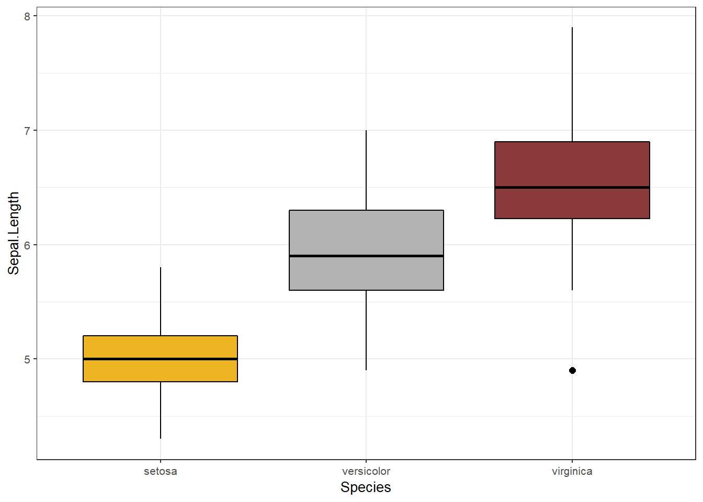
7.2.1 Extensions of Boxplots: Violine Plots
An alternative to boxplots which display the distribution within the data even more accurately are violin plots.
ggplot(iris, # use iris data
aes(x=Species, y=Sepal.Length, # define axes
fill=Species)) + # color by Species
geom_violin(trim=FALSE)+ # cerate violin plots
geom_boxplot(width=0.1, fill="white")+ # create (additional) boxplots
labs(title="Sepal Length by Species", # determine title
x="Species", y = "Length (cm)") + # determine axes labels
scale_fill_manual(values=c("#999999", "#E69F00", "#56B4E9")) + # define colours
theme_bw() + # use black ad white theme
theme(legend.position="none") # surpress legend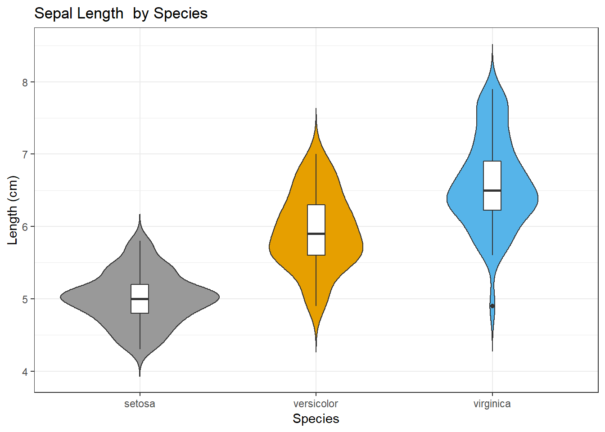
8 Density Plots
Another way to visualize the distribution of the data with respect to numeric variables are density plots or Kernel Density Plots. Density plots smooth the data using so-called kernel smoothing to even out the distribution of frequencies along the lines of a numeric or interval variable. The peaks of density plots help display where values are concentrated over the interval. To show the relationship between the variable and the density plot, we will first create a scatter plot and then create a density plot of the variable displayed on the x-axis of the scatter plot.
ggplot(iris, # use iris data
aes(x=Sepal.Length, y=Sepal.Width, # define axes
color=Species)) + # colour by Species
geom_point() + # create dot plot
scale_color_manual(values = c('indianred4', 'darkgrey', 'gold')) + # define colours
theme(legend.position=c(0,1), legend.justification=c(0,1)) # add legend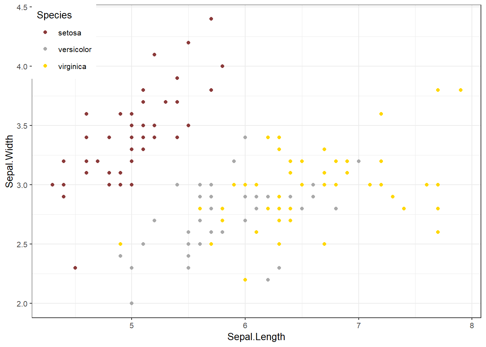
We will now create a marginal density plot of Sepal.Length (x-axis).
ggplot(iris, # use iris data
aes(Sepal.Length, fill=Species)) + # define axis and coloring
geom_density(alpha=.5) + # create density plot and define smoothing factor
scale_fill_manual(values = c('indianred4', 'darkgrey', 'gold')) + # define colours
theme(legend.position = "none") # surpress legend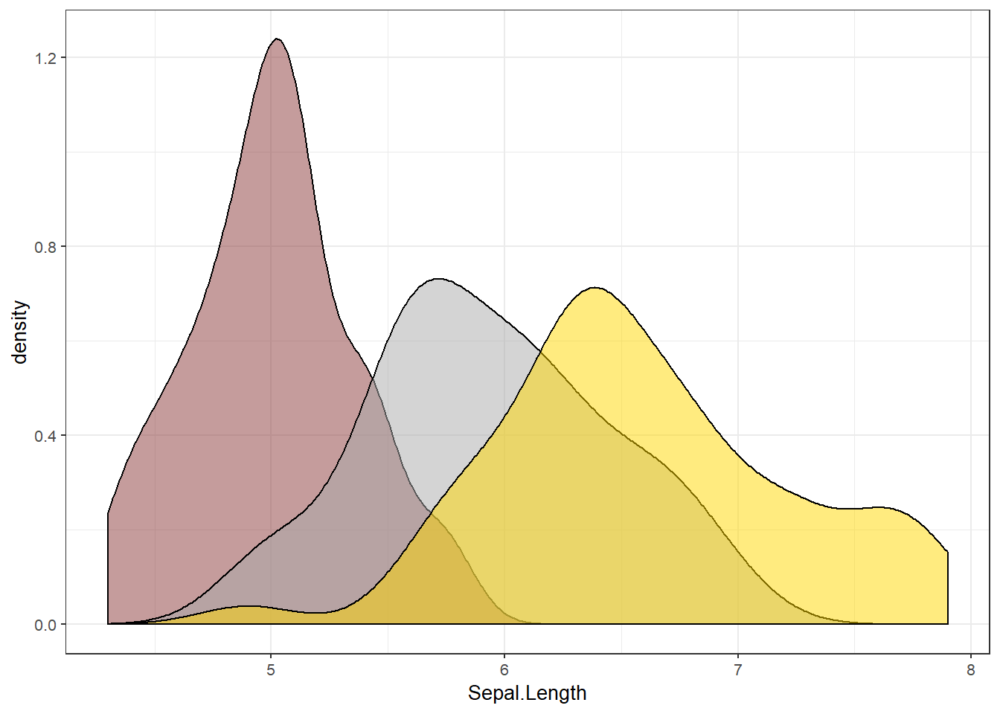
The density plot show that the species differ substantially in their sepal length as the peaks of the three species are located at different points on the x-axis.
9 Wordclouds
Word clouds visualize word frequencies of either single corpus or different corpora. Although word clouds are rarely used in academic publications, they are a common way to display language data and the topics of texts - which may be thought of as their semantic content. To exemplify how to use word clouds, we are going to have a look at the election programs (Wahlkampfprogramme) of German political parties for the Bundestag elections 2013.
Prepare data by removing all lists from the current work space and installing packages we need or which may be useful
# (to activate just delete the #)
#install.packages("tm")
#install.packages("wordcloud")
#install.packages("Rstem")
#install.packages("stringr")
#install.packages("SnowballC")
# Initiate the packages
library(tm)
library(wordcloud)
#library(Rstem)
library(stringr)
library(SnowballC)Read in data
At first, I thought that word clouds are simply a fancy but not very helpful way to inspect language data but I have to admit that word clouds really surprised me as they do appear to possess potential to offer an idea of what groups of people are talking about.
The comparative word cloud shows that the FDP stresses concepts like “wettbewerb”, “freiheit”, “chancen”, “liberal” thereby stressing their liberal outlook (they didn’t make it and didn’t deserve it by the way - just my opinion). Die Grünen support every nonsense as they are “für” everything and relied more on emphasizing “frauen”, “zukunft”, and “teilhabe” which is in line with their feel-good philosophy. Die Linke rallied on about what we have to be done (“müssen”), and used words like “sozial”, “beschäftigten”, and “öffentlich” a lot showing their emphasis on economic issues. The social democrats (SPD) addressed topics like “kommunen”, “arbeit”, “gesellschaft”, “bildung”, and “gerechtigkeit” - so they essentially used their typical buzz words (just sayin’). Finally, the CDU/CSU mentioned “ländlich”, “wohlstand”, “unser*, “and”weiterhin" to suggest that they will just continue with whatever nothing that have been doing over the past years.
References
Anderson, Edgar. 1935. “The Irises of the Gaspe Peninsula.” Bulletin of the American Iris Society 59: 2–5.
Becker, Richard A., John M. Chambers, and Allen R. Wilks. 1988. The New S Language. Wadsworth & Brooks/Cole.
Fisher, R. A. 1936. “The Use of Multiple Measurements in Taxonomic Problems.” Annals of Eugenics 7 (2): 179–88.
Wilkinson, Leland. 2006. The Grammar of Graphics. Canada: Springer Science & Business Media.